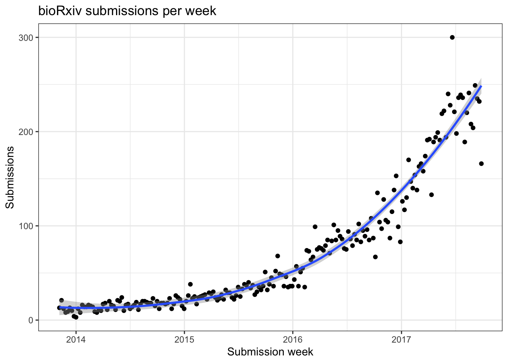

bioRxiv 2017 update
collection_date <- ymd("2017_10_04")
dat <- fread("~/Documents/GitHub/biorxivData/data/biorxiv_data_2017_10_04.tsv") %>%
mutate(Age = collection_date - ymd(`Original submission`),
Revised = `Original submission` != `Current submission`)Submissions over time
weekly <- dat %>%
mutate(weeks_past = ceiling(Age / 7),
`Submission week` = collection_date - weeks(weeks_past)) %>%
group_by(`Submission week`) %>%
summarise(Submissions = n())
ggplot(weekly, aes(`Submission week`, Submissions)) +
geom_point(stat = "identity") +
geom_smooth() +
ggtitle("bioRxiv submissions per week") +
theme_bw()
Last year the number of weekly submissions peaked at around 60, now it’s 5x higher hitting 300 per week earlier in 2017.
How many of these submissions get revised?
dat %>%
group_by(Revised) %>%
summarise(n = n(), `%` = n/nrow(dat) * 100)## # A tibble: 2 x 3
## Revised n `%`
## <lgl> <int> <dbl>
## 1 FALSE 10603 72.4
## 2 TRUE 4042 27.6This is almost exactly the same percentage as I found last year.
2017 highlights
What have been the most popular preprints so far this year?
days <- collection_date - ymd('2017-01-01')
dat %>%
filter(Age < days) %>%
arrange(desc(`PDF views`)) %>%
head(10) %>%
select(Title)## Title
## 1 Opportunities And Obstacles For Deep Learning In Biology And Medicine
## 2 Index Switching Causes “Spreading-Of-Signal” Among Multiplexed Samples In Illumina HiSeq 4000 DNA Sequencing
## 3 Regulation of Life Span by the Gut Microbiota in The Short-Lived African Turquoise Killifish
## 4 Sex Differences In The Adult Human Brain: Evidence From 5,216 UK Biobank Participants
## 5 The Reproducibility Of Research And The Misinterpretation Of P Values
## 6 Major flaws in "Identification of individuals by trait prediction using whole-genome sequencing data"
## 7 The Beaker Phenomenon And The Genomic Transformation Of Northwest Europe
## 8 The Genomic History Of Southeastern Europe
## 9 The Human Cell Atlas
## 10 Comprehensive single cell transcriptional profiling of a multicellular organism by combinatorial indexingSome really topical stuff (not surprisingly): p-value controversies, single cell genomics, the index-switching catastrophe, and the recent Venter debacle.
Data
The data is available on my github to explore.